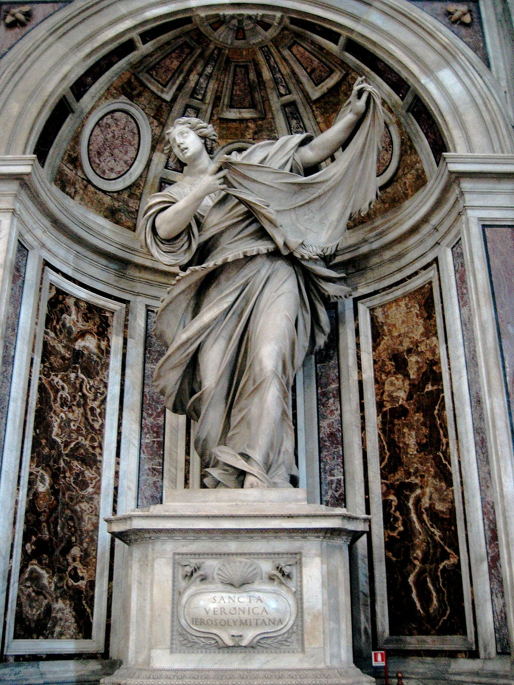

<head>
<meta charset="UTF-8" />
<meta name="keywords" content="drawing, painting" />
<meta name="description" content="drawings by Sunjy" />
<title>Sunjy</title>
<link rel="shortcut icon" type="image/x-icon" href="../../mImages/mCommon/favicon.ico" media="screen" />
<link rel="stylesheet" type="text/css" href="../../mCsses/mCommon/mCssA.css" />
<link rel="stylesheet" type="text/css" href="../../mCsses/mCommon/mCssB.css" />
<link rel="stylesheet" type="text/css" href="../../mCsses/mCommon/mCssC.css" />
<link rel="stylesheet" type="text/css" href="../../mCsses/mCommon/mCssD.css" />
<link rel="stylesheet" type="text/css" href="../../mCsses/mContent/mCssA.css" />
<link rel="stylesheet" type="text/css" href="../../mCsses/mContent/mCssB.css" />
<link rel="stylesheet" type="text/css" href="../../mCsses/mContent/mCssC.css" />
<link rel="stylesheet" type="text/css" href="../../mCsses/mContent/mCssD.css" />
</head>
<script type="text/javascript" src="../../mScripts/mContent/mContentAA.js" /></script>
<script type="text/javascript" src="../../mScripts/mContent/mContentAB.js" /></script>
<script type="text/javascript" src="../../mScripts/mContent/mContentAC.js" /></script>
<script type="text/javascript" src="../../mScripts/mContent/mContentAD.js" /></script>
<script type="text/javascript"></script> 
<script type="text/javascript">
document.write('<div class="mImgAbsolute"></div>');
/*
document.write('<p class="mFontSizeBColor" />From a white paper...</p>');
document.write('<table class="center"><tr><td>');
document.write('');
document.write('</td></tr></table>');
*/
</script>


<script type="text/javascript">
document.write('<p class="mFontSizeBColor" />Saint Veronica </p>');
document.write('<p class="mFontSizeSColor" />Saint Veronica by Francesco Mochi was created for one of the niches at the crossing of St. Peter’s Basilica. This statue of the frantic Saint Veronica displaying the Veil of Veronica is one of the four larger-than-life sculptures which frame the Baldacchino in the transept of St. Peter’s Basilica. Each statue depicts a venerated relic, which at the time, was the property of the Pope and St. Peters. The figure of Saint Veronica was created to honor the relic of the Veil of Veronica.<br><br>The Veil of Veronica known in Italian as the Volto Santo or Holy Face is a Christian relic of a piece of cloth which, according to tradition, bears the likeness of the face of Jesus and was not made by human hand. Various existing images have been claimed to be the “original” relic or early copies of it.<br><br>According to Church tradition, Veronica was moved with sympathy when she saw Jesus carrying his cross to Golgotha and gave him her veil, that he might wipe his forehead. Jesus accepted the offering, held it to his face, and then handed it back to her. The image of his face was miraculously impressed upon it. This piece of cloth became known as the Veil of Veronica.<br><br>The Statue of Saint Veronica is one of these four statues. <br></p>');
document.write('<table class="center" /><tr><td>');
document.write('<br>The Veil of Veronica known in Italian as the Volto Santo or Holy Face is a Christian relic of a piece of cloth which, according to tradition, bears the likeness of the face of Jesus and was not made by human hand. Various existing images have been claimed to be the “original” relic or early copies of it.<br><br>According to Church tradition, Veronica was moved with sympathy when she saw Jesus carrying his cross to Golgotha and gave him her veil, that he might wipe his forehead. Jesus accepted the offering, held it to his face, and then handed it back to her. The image of his face was miraculously impressed upon it. This piece of cloth became known as the Veil of Veronica.<br><br>The Statue of Saint Veronica is one of these four statues. <br>" />');
document.write('</td></tr></table>');
</script>


